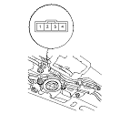
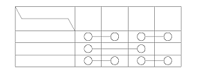
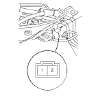
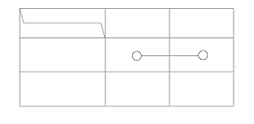

Sunroof Limit Switch Test
OPEN/CLOSE, TILT/CLOSE SWITCH:
Remove the headliner
Disconnect the 4P connector from the sunroof limit switch.

Check for continuity between the terminals in each switch position according to the table.
NOTE: Turn the motor by hand with the wrench.

OPEN SWITCH (KK, KU and KT models):
Remove the headliner.
Disconnect the 4P connector from the sunroof limit switch.

Check for continuity between the terminals in each switch position according to the table.
NOTE: Turn the motor by hand with the wrench.
